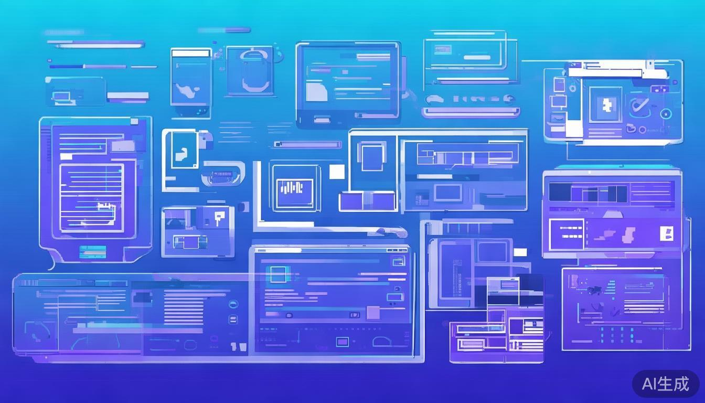

工科不是纸上谈兵。这里是开源硬件与工程实训的基地：单片机、电路、3D 打印、CNC、机器人仿真——每个工具都能开箱即用，每个项目都能亲手做出实物。
从入门到进阶，每个项目都给你任务、工具和验收标准。做完一个，比看十篇教程有用。
用 ESP32 + 温湿度传感器，把数据传上云。
用 Arduino + 电机驱动 + 红外传感器，做一辆会沿着黑线跑的小车。
用 KiCad 画原理图和布线，打样一块能点亮的电路板。
用 FreeCAD 设计一个实用小零件，切片打印出来。
用 MuJoCo 或 Gazebo 仿真一台机械臂，学会控制关节。
用 GRBL + Arduino，把一台小雕刻机跑起来。

全部开源、可免费使用。绿色命令行为最快上手的安装方式，官网可下载安装包。
从材料清单到验收标准，每一步都写清楚。跟着做，卡住了再回来看。
六个基础实训做完，往下走是"AI + 硬件"。这里不只是动手，是用大模型当你的工程搭档。
ESP32-CAM + 图像识别，从循线升级到识别标志与物体。
语音识别模块 + ESP32，喊一句"开灯"就亮。
六自由度机械臂 + 逆运动学，从仿真走向实物。
把轻量模型跑在开发板上，离线识别不联网。
开源飞控 + 姿态解算，理解无人机怎么稳。
多设备接入 + 云看板，做一套自己的物联网。
把需求说清楚：芯片型号、引脚、功能，DeepSeek 直接输出可编译的 Arduino / MicroPython 代码，你再微调。
把原理图描述或截图给 AI，让它找隐患：电源、去耦、上拉、散热、ESD 保护。
描述加工路径和材料，AI 帮你生成 G 代码或给出 CNC 参数建议。
把症状说清楚："上电没反应、灯不亮"，AI 给出一套从电源到信号的排查顺序。
描述零件用途和受力，AI 给出建模步骤、壁厚、支撑与打印方向建议。
"你是嵌入式工程师。我用 ESP32，DHT11 数据脚接 GPIO4。请写 Arduino 代码：每 2 秒读取温湿度并串口打印，要求带注释并说明接线。"
"我画了一个 5V 转 3.3V 供电电路，用 AMS1117-3.3，输出端接 10uF 电容。请指出可能的问题，并给出改进建议。"
"用 GRBL 控制 CNC，在 100×100mm 木板中心刻直径 30mm、深 1mm 的圆。请给出安全的下刀路径 G 代码，并解释参数含义。"
"我的 Arduino 小车接电池后板子灯亮但电机不转，L298N 接 12V，Arduino 用 USB 供电。请按从电源到信号的顺序列出排查步骤。"
"我要设计一个承重 300g 的手机支架，用 PLA 打印。请给出建模步骤，包括壁厚、填充率、支撑和打印方向建议。"